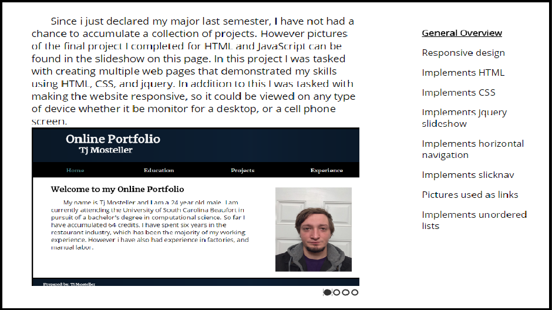
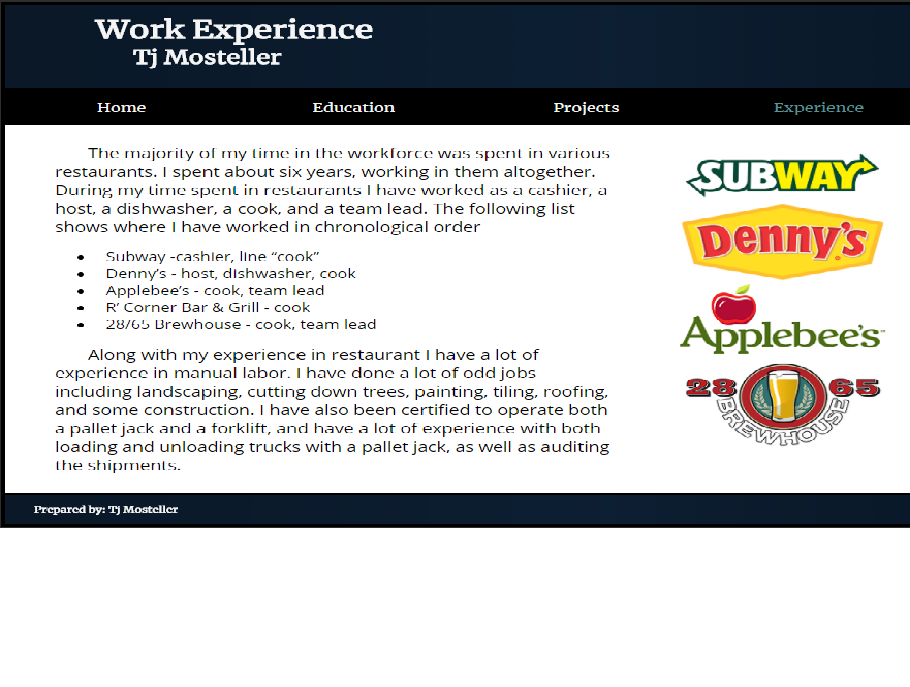

Since i just declared my major last semester, I have not had a chance to accumulate a collection of projects. However pictures of the final project I completed for HTML and JavaScript can be found in the slideshow on this page. In this project I was tasked with creating multiple web pages that demonstrated my skills using HTML, CSS, and jquery. In addition to this I was tasked with making the website responsive, so it could be viewed on any type of device whether it be monitor for a desktop, or a cell phone screen.

